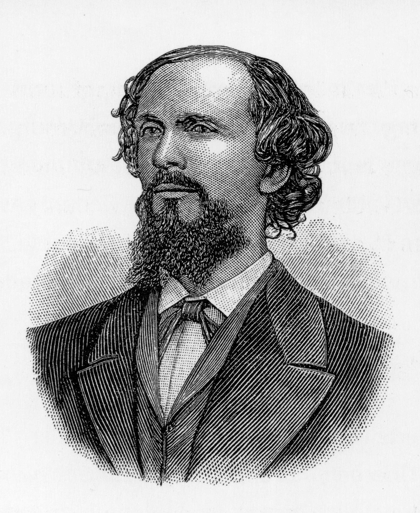

Karl Heinrich Ulrichs
Karl Heinrich Ulrichs nasceu no dia 28 de agosto de 1825. Foi um escritor alemão que hoje é visto como o pioneiro do movimento moderno pelos direitos dos gays. Ele é frequentemente citado como a primeira pessoa a "sair" publicamente como gay, embora o termo que ele usou fosse "Urning", em referência a Urano.
Formou-se em direito e teologia na Universidade de Gottingen em 1846. De 1846 a 1848 estudou história na Universidade de Berlim, onde escreveu uma dissertação sobre a Paz de Vestfália.
De 1848 a 1857 trabalhou como advogado oficial junto da comarca de Hildesheim, em Hanover. Foi demitido em 1858 quando a sua homossexualidade se tornou óbvia.
Antes dos movimentos que trouxeram à tona os assuntos de gênero e sexualidade, como dos anos de 1960, Karl Heinrich Ulrichs já havia levantado a bandeira gay em 1867. Contrariando o conservadorismo da época, o jurista alemão foi a primeira pessoa abertamente gay que falou sobre igualdade e homossexualidade num contexto científico, foi pioneiro em escrever sobre o assunto e conferir termos para falar sobre homossexualidade.
Além de defender a homossexualidade e falar abertamente sobre sua atração por homens, Karl defendeu as primeiras leis em defesa de gays da época. Em 29 agosto de 1867, ele se posicionou contra a criminalização da homossexualidade no palco do Teatro Odeon, em Munique, em meio a vários outros juristas importantes. Além disso, ele estimulou estudos científicos sobre sexualidades que estavam fora do que era considerado padrão na época.
Ele defendia que as relações gays eram legítimas, e que essas pessoas teriam o direito de manifestar os seus sentimentos. É considerado assim o primeiro defensor da identidade queer a partir de estudos científicos.
Para ele, naquela época, era possível que a homossexualidade fosse uma condição de nascimento. Assim, a condição de homossexual não seria dizimada com a ideia de “cura”.
Na infância, Ulrichs gostava de se vestir como menina e se comportar de forma feminina. Seu primeiro relacionamento homossexual foi com um jovem que conheceu aos 14 anos.